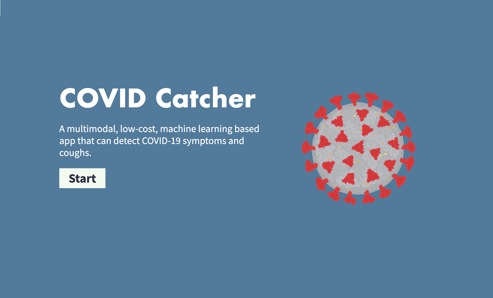

Michael Li
About
I'm an undergraduate student at Carnegie Mellon University studying computer science, statistics and machine learning. My interests include artificial intelligence, human computer.
I'm currently a machine learning intern at Epirus, working on reinforcement learning for engaging autonomous drone swarms.
Experience
- Machine Learning Engineer Intern, Epirus (June 2024 - Present)
- Software Development Engineer Intern, Beaver Health (May 2023 - August 2023)
- Researcher, University of Victoria (July 2022 - May 2023)
- Creator & Software Developer, COVIDCatcher (December 2021 – May 2023)
Projects
-
Github
Repo Explorer (June 2024) Explore GitHub repos as folders.

- COVIDCatcher (December 2021 - May 2023) Detect COVID symptoms and forecast COVID cases with ML. 
-
The
Roast
(July 2023) Daily
personalized newsletter generator.

-
Colors of Wes Anderson
(October 2023)Color palettes from Wes Anderson films.

-
Multivac (October 2023)
Interactive text adventure game built with Python, React, Flask,
LangChain, and LlamaIndex.

-
Shipworthy
(July 2020)
Real-time ship simulator and game with Python, OpenCV, XQuartz, and Unity.

-
SEA
(July2020)
Deep learning pipeline with TensorFlow, Keras, and Python for endangered
marine wildlife images.

-
Ad Lunam
(July 2020)
Immersive VR space exploration game using C# and Unity with procedurally
generated planets and asteroidfields.

-
Stance
(June 2020)
Web app with Python, Flask, scikit-learn, and LIME for hate speech
detection and transparent model visualization.

Publications
-
The House
Always Wins: A Framework for
Evaluating Strategic Deception in LLMs
Tanush Chopra, Michael Li
arXiv preprint arXiv:2407.00948, 2024 -
Predicting the
daily counts of COVID-19 infection using temporal convolutional networks
Michael Li, Fatemeh Esfahani, Li Xing, Xuekui Zhang
Journal of Global Health 13, 2023